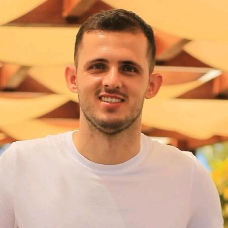

Darlon Antônio
Ex-aluno Universitário
inativo 2010-2015Rafael Arlindo
Ex-aluno Universitário
inativo 2012-2017Jairo Marotta
Ex-aluno do Técnico
inativo 2011-2016Ângelo Batista
Ex-aluno Universitário
inativo 2013-2018
Bruno Luan
Ex-aluno Universitário
inativo 2014-2019Kelly de Paiva
Ex-aluna Universitária
inativo 2012-2016🤝 Contribua
Tem interesse em somar forças? Veja como você pode colaborar com código, documentação ou ideias.
Saiba como ajudar